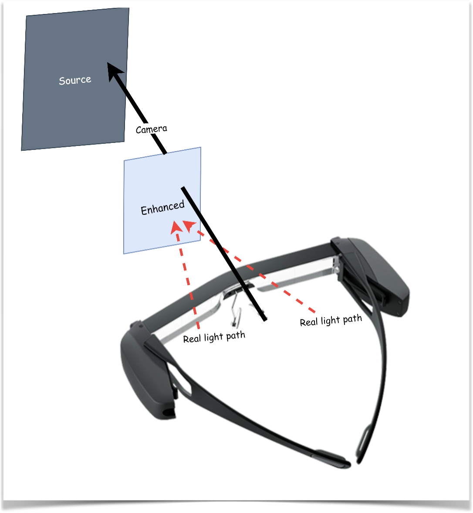
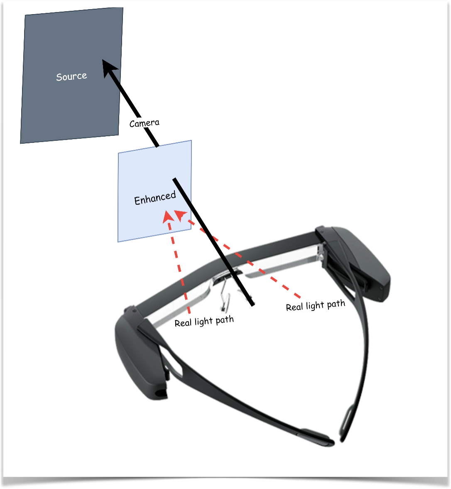
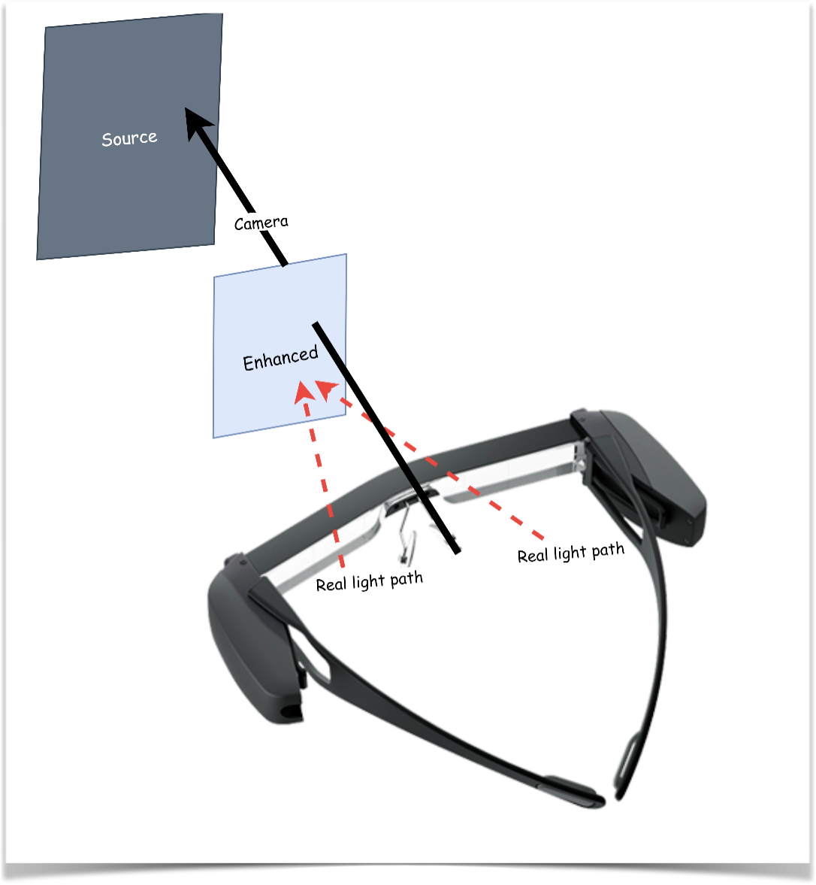
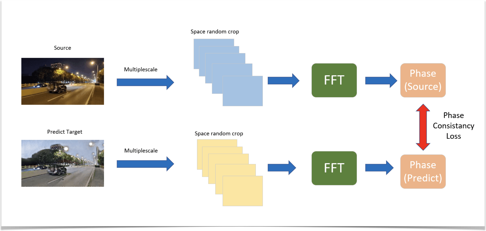
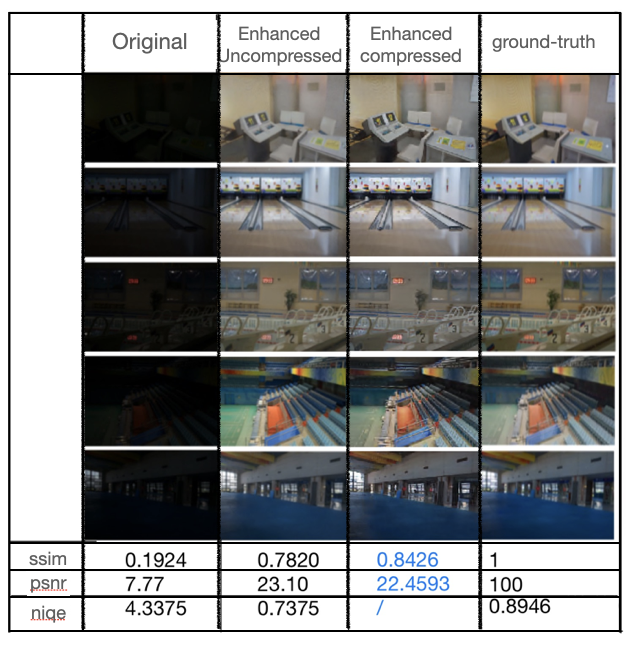

..
 

Night Vision Enhancement App
Intro
In this project, we use CycleGAN and FeatureGAN to generate day images based on night images in real-time. We also developed an Android app for this project. It can be used on PCs, mobile phones, and AR glasses.
Demo

Methods
- Multi-Scale FFT Semantic Extractor

- Core algorithms
| Core Techniques | Advantages |
|---|---|
| CycleGAN+featureGAN | After enhancement, the original image features can still be retained. |
| Multi- scale FFT semantic extractor (novel） | Introduce loss function in the image frequency domain to improve semantic consistency. |
| Compress the model via once-for-all algorithm. | Cut unnecessary connections in the model, greatly reduce the computing resources occupied by the model, and can run on platforms such as mobile phones and AR glasses. |
| Complete mobile platform tensor and image conversion API (novel) | Real-time transform the tensors output by the model into images on the mobile side and enhance the images. |
| Danger warning | Frame nearby dangerous vehicles in red via object recognition model and depth estimation algorithm. |
Results
